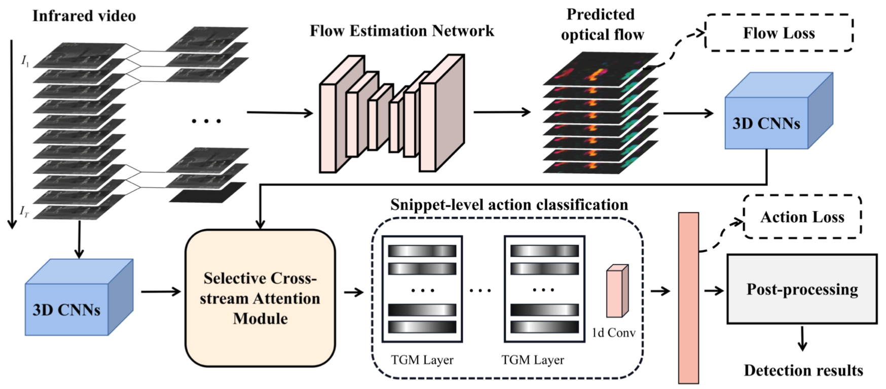
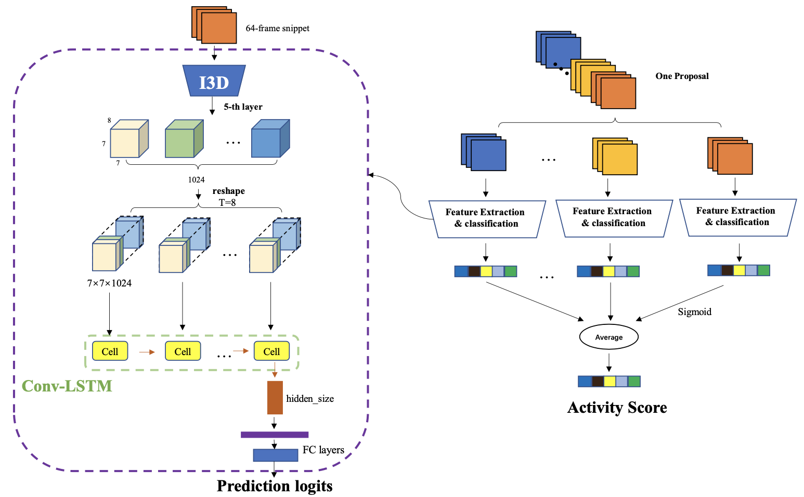
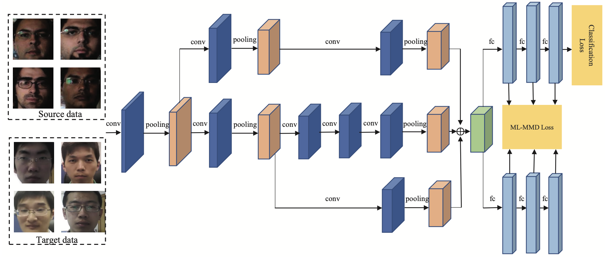

Publications
2021
- 
-
Infrared Action Detection in the Dark via Cross-Stream Attention Mechanism.
Xu Chen*, Chenqiang Gao*, Chaoyu Li, Yi Yang, Deyu Meng.
IEEE Transactions on Multimedia(TMM) , 2021
PDF
2019
- 
-
NTT CQUPT@TRECVID2019 ActEV: Activities in Extended Video.
Yongqing Sun, Xu Chen, Chaoyu Li et al.
TREC Video Retrieval Evaluation (TRECVID), 2019
PDF
- 
-
Face Anti-Spoofing Based on Multi-layer Domain Adaptation
Fengshun Zhou*, Chenqiang Gao*, Fang Chen, Chaoyu Li, Xindou Li, Feng Yang, Yue Zhao.
IEEE International Conference on Multimedia & Expo Workshops (ICMEW) , 2019
PDF